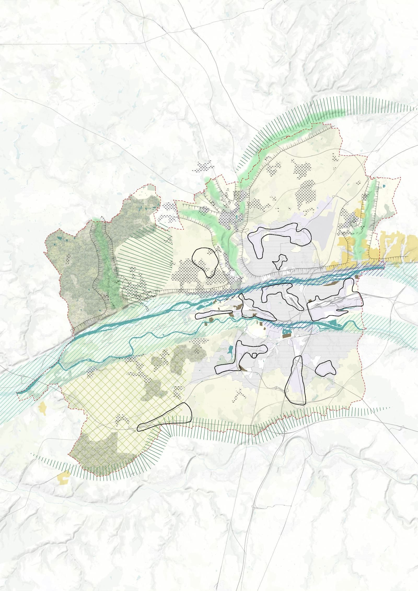
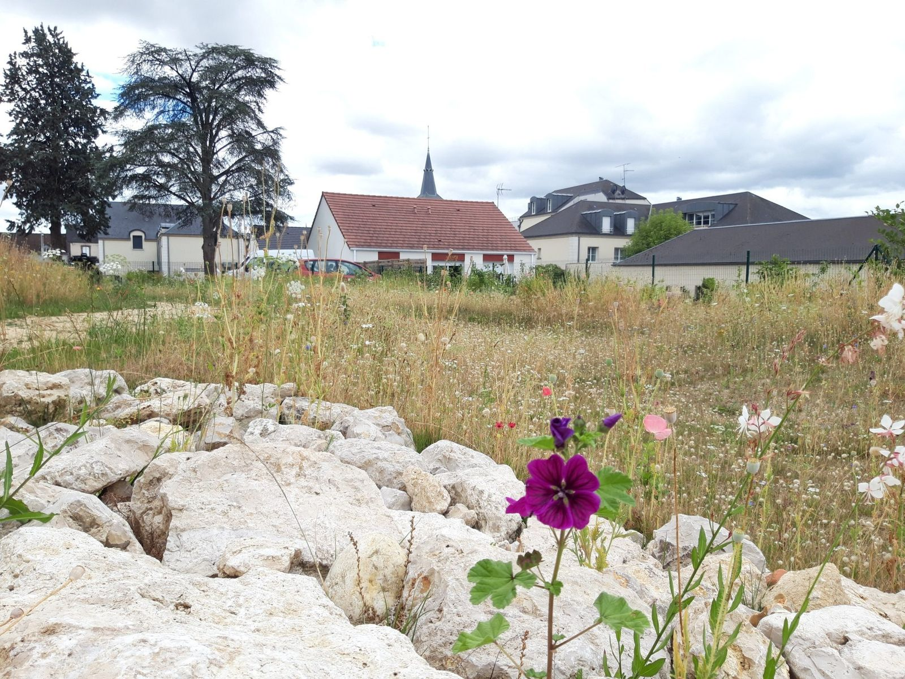
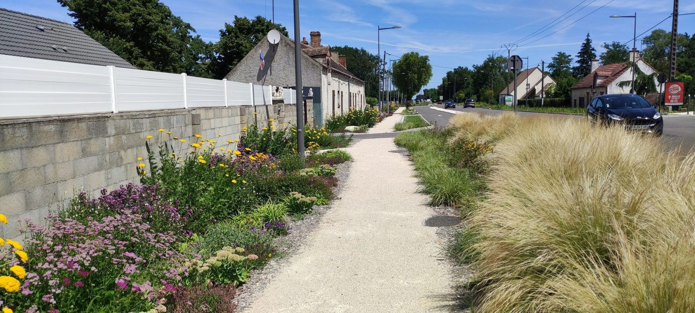
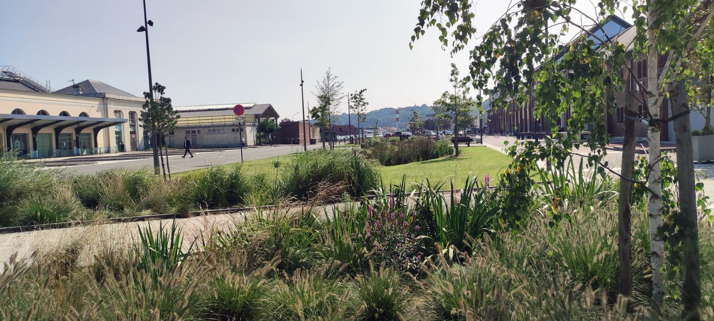
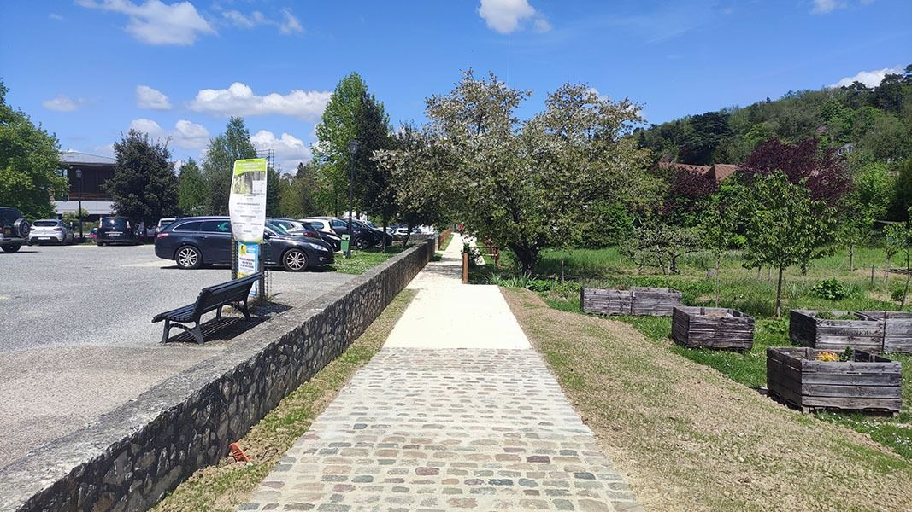
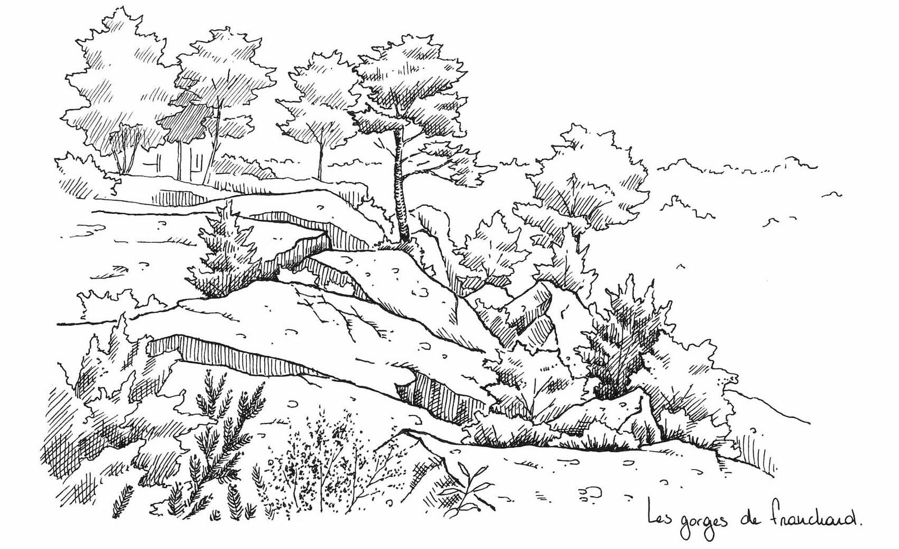
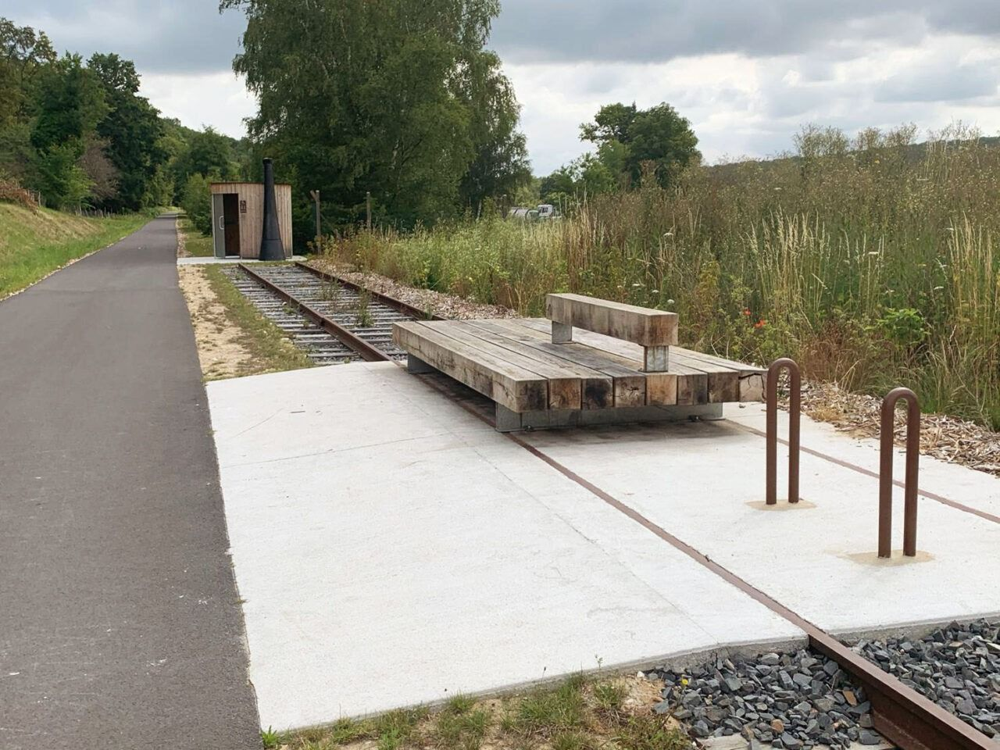

Projets
Maîtrises d’œuvre et études : des espaces publics aux grands paysages, de la renaturation d’une friche industrielle à la valorisation d’un site patrimonial.
Mission
Région















Aucun projet ne correspond à cette combinaison. Choisissez « Tout afficher ».